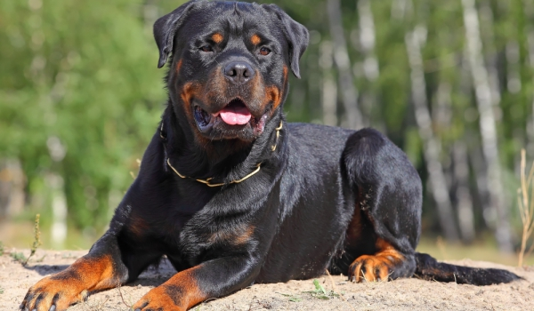

Ротвайлер
Ротвайлер е порода кучета. Няма точна информация за родината на ротвайлера, според някои източници произходът му датира още от Римската империя. Използван е като домашно и овчарско куче. Според други родината му е Германия. По време на Първата и Втората световни войни е използван като стражево куче.
